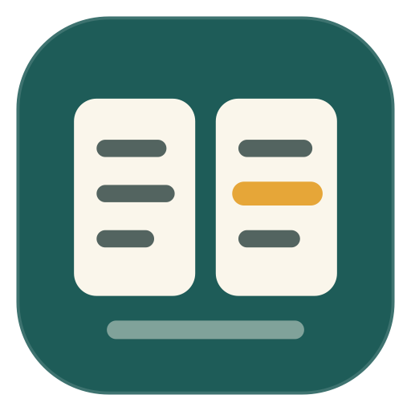

EaseRead for Safari
Calm, dyslexia friendly reading for every webpage.
Turn on EaseRead in Settings → Apps → Safari → Extensions, then allow all websites.
Follow the 3 quick steps below to enable EaseRead in Safari.
EaseRead is turned on in Safari! Click the EaseRead icon in your Safari toolbar anytime.
EaseRead is currently off. Follow the steps below to turn it on in Safari Settings.
- Open Safari → Settings → Advanced and check Show features for web developers.
- Open the Developer tab in Safari Settings and check Allow unsigned extensions.
- Open the Extensions tab, check EaseRead, and set website access to Always Allow on Every Website.